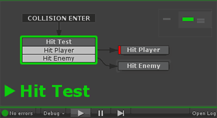

Breakpoints cause execution to pause when the state is entered.

While paused you can take your time to check the FSM Log and step back through state changes using Debug Flow.
NOTE: The break happens BEFORE any actions are executed on that state, so you can examine the state of the game before you enter the new state.
Press Pause to continue execution.
Setting Breakpoints
There are 2 ways to set breakpoints on states:
- Right click on the state and select Toggle Breakpoint from the State Context Menu.
- Select the state and select Toggle Breakpoint from the State Editing Tools.
You can also clear all breakpoints using the Debug Menu.
Breakpoint Indicators
Normal State (no breakpoint):
State with breakpoint:
State with breakpoint and breakpoints disabled:
Preferences
See Jump to Breakpoint/Error in Debugging Preferences.